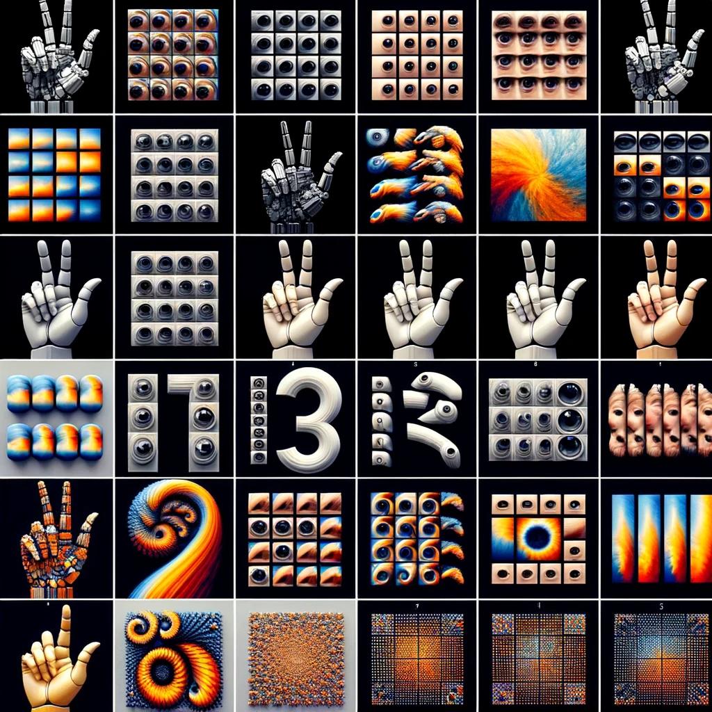
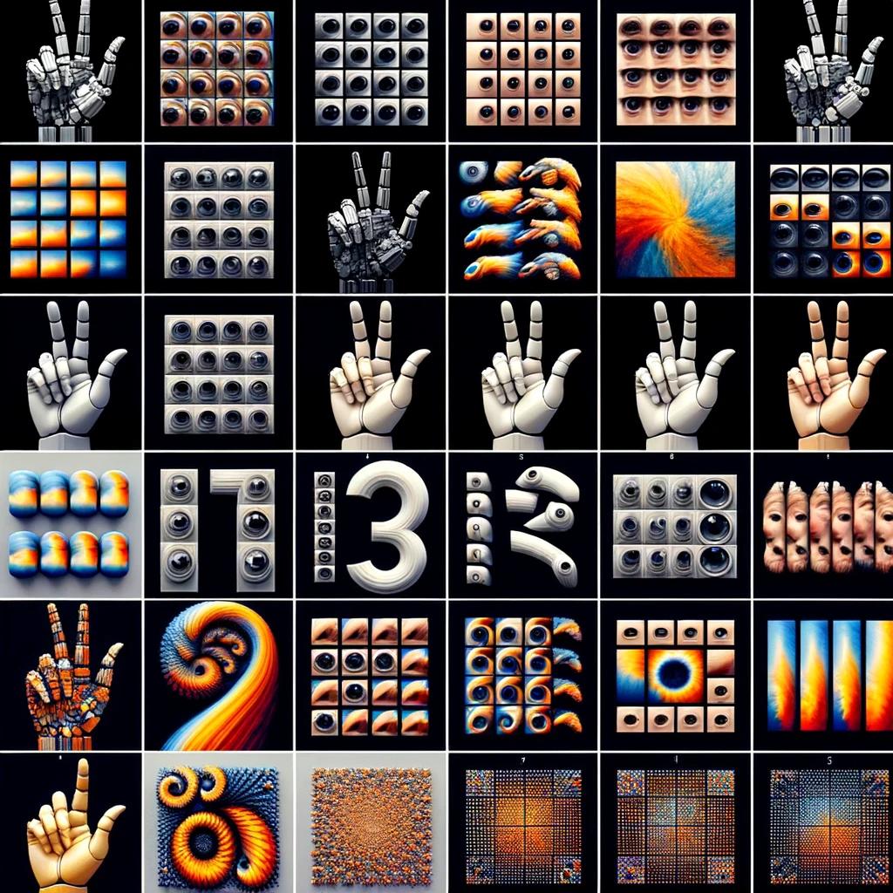

"Just like many other famous technologies in deep learning,
the main challenge of a technology in deep leaning is probably invariance.
Invariance is tightly related to efficiency, both in training speed and data.
For example, CNN has translational invariance or equivariance,
which means if we translate an object in an image from place A to place B,
the learned object feature is also translated to place B.
Thank to this property, we need not translate an object from places to places
for data augmentation. However, CNN cannot be rotation invariance.
That ‘s why we have to rotate the input images for data augmentation during training.
In point clouds, other than the above two invariances,
we have to consider one more: permutation invariance,
in which the learned point cloud features are consistent
no matter how the points are stored in the input file.
Therefore, the three invariance challenges are:
translation invariance, rotation invariance, and permutation invariance."